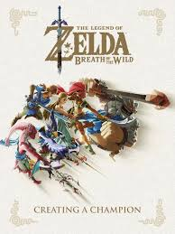
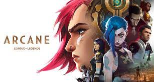
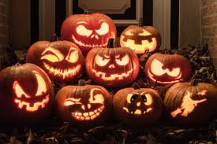

My favorite 3 things
Video games
-
Zelda: Breath of the wild: Zelda BOTW is a Nintendo switch game that
came out on March/3/2017 & is the first complete open world zelda game.
This game is a fun action packed game full of
exploration,adventure,puzzles,story, & much more that zelda has always
been able to offer.

-
Zelda: Tears of the kingdom: Just as previously mentioned Zelda TOTK is
a continued story of the previous zelda game. Now with a new
story,characters,shrines,enemies,& more to explore.

-
P.V.Z: PVZ is the first game of a long and enjoyable franchise that is
adored by many & among one of the first games i ever played. PVZ is a
tower defense style game where u defend Crazy Daves house with a variety
of plants against a number of unigue(ish) Zombies. It released
May/5/2009

-
P.V.Z 2: PVZ 2 is the sequel to PVZ 1 where u now travel through time to
collect plants and fight zombies & Zomboss in various ways. Along with
the game being longer with numerous worlds to collect plants in it also
offers more game modes than the previous one. PVZ 2 also still gets
frequent updates as PVZ 3 is still in the works. PVZ 2 released
Aug/15/2013

-
P.V.Z Garden Warfare: PVZ GW takes a spin on the tower defense game and
turns it into a first person shooter. With this being the PVZ where
plants and zombies fought it put a unique spin on first person shooters.
The game was released Feb/25/2014

-
P.V.Z Garden Warfare 2: This is the PvZ game ive spent most of the time
on out of all of PvZ games. With each of the 7 classes having elemental
variations,various abilities,& 2 secrect characters. This game i still
havent completed as there is a numerous amount of stuff to do. My
favorite character on plants is Electro Pea. & on Zombies Drake IMP.
This game released Feb/23/2016

-
P.V.Z Battle for neighborville: PvZ BFN is the last PvZ game to be
released and this game somewhat flopped compared to the previous PvZ GW
games. With GW 2 being a large and well known game in the gaming
community everyone expected BFN to be just as good or even better. Sadly
this was not the case as character variants were not in the game and
even with the story it felt somewhat dull. This led many people to go
back to GW 2 and BFN slowly died over time as the developers (Popcap)
laft it after only 1 year. My fav character on Plants is
Snapdragon/Nightcap and for Zombies Space Cadet. BFN released
Spet/4/2019 but was fully released Oct/18/2019

TV Shows (Arcane)

-
Arcane is a TV series of 9 episodes currently with a 2nd season in the
works. Arcane is a show where it cycles between the characters as each
have their fate intertwined with one another.
Halloween
-
Halloween is a favorite holiday of mine filled with horror
movies,costumes,frightful huanted mansions,& more. My Halloween costume
for this year is basically just a psychotic grim reaper.
